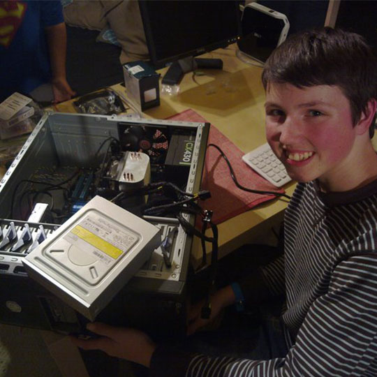

Ever since my family got our first computer (running Windows 95) I have always been intrigued by everything technical. I started off looking for ways to 'cheat' in my favourite games, not so much to further my game progress but to give myself an understanding of how the underlying system worked. This led me to YouTube so that I could learn about the systems.
This led to a developing interest at age 10 of video production, so I started a YouTube channel. Originally, I made videos about games such as Club Penguin, where I would teach people about secrets within the game. At the same time as this, my interest in other areas such as computers increased.
Around this time I also learnt HTML programming through a couple of youtube videos; a skill which would come in handy later on in my education. As my enthusiam built, I found myself wanting my own computer so that I could pursue my hobbies with more freedom. As a birthday and Christmas present in 2010, I received computer parts which I assembled into my first custom built PC.
Seeing as I had my own PC, I spent more time teaching my self and making videos about subjects such as Xbox 360 mods, video editing and effects and Windows tricks.
My next major acheivement was completing my GCSE exams in July 2013/2014 at St. Joseph's School. I received these grades, which allowed me to enter my college of choice, Salisbury 6th Form College. At Sixth Form, I chose to study Maths, Further Maths, and Biology in the first year, continuing to study just Maths and Further Maths in the second year. As well as these A-Level courses, I also did a BTEC Level 3 in Computer Science. I received these grades.
I loved the computing course and learnt many skills over the time I took it, including object oriented programming, event driven programming, web development skils such as JSON and light Javascript and Raspberry Pi programming. More on this can be seen in the programming section.
I recently went on a gap year which is allowed me to spend increased time on my hobbies such as programming, web development and video editing. I visited Canada, America, Mexico, Peru, Argentina, Chile, New Zealand, Australia, Malaysia, Cambodia, Vietnam, China, Hong Kong and India before heading home.
I am now studying MEng Computer Science with Artifical Intelligence at the University of Southampton. I am currently in my third year of four, and have studied these modules in first year, second year, and third year. Alongside this, I am also active within the university's windsurfing society, and was voted into the committee as Media Rep by other members in my third year.